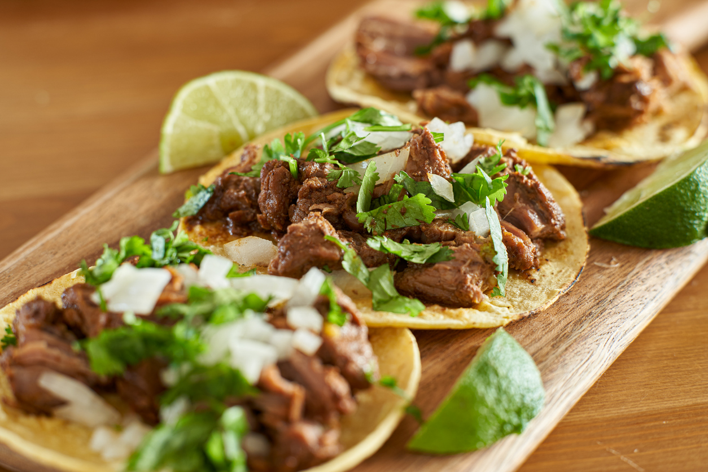

Home
Carne Asada Tacos
These tacos are perfect for a quick and delicious meal.

Carne Asada Tacos are a flavorful and satisfying dish that combines tender grilled steak with fresh toppings,
all wrapped in a warm tortilla. The steak is marinated in a blend of citrus juices, garlic, and spices,
giving it a zesty and savory flavor. Whether you're enjoying them for a weeknight dinner or serving them
at a weekend barbecue, these tacos are sure to be a hit with family and friends.
Ingredients
- 1 lb flank steak
- 1/4 cup lime juice
- 2 cloves garlic, minced
- 1 tsp cumin
- 1 tsp chili powder
- Salt and pepper to taste
- 8 small corn tortillas
- 1/2 cup chopped cilantro
- 1/2 cup diced onions
- 1/2 cup crumbled queso fresco
- 1/4 cup salsa verde
Instructions
- In a bowl, combine lime juice, garlic, cumin, chili powder, salt, and pepper. Add flank steak and marinate for at least 30 minutes.
- Preheat grill to medium-high heat. Grill steak for 4-5 minutes per side, or until desired doneness.
- Let steak rest for 5 minutes, then slice thinly against the grain.
- Warm tortillas on the grill for 30 seconds per side.
- Assemble tacos by placing sliced steak on tortillas and topping with cilantro, onions, queso fresco, and salsa verde.
- Serve immediately and enjoy!
More Recipes